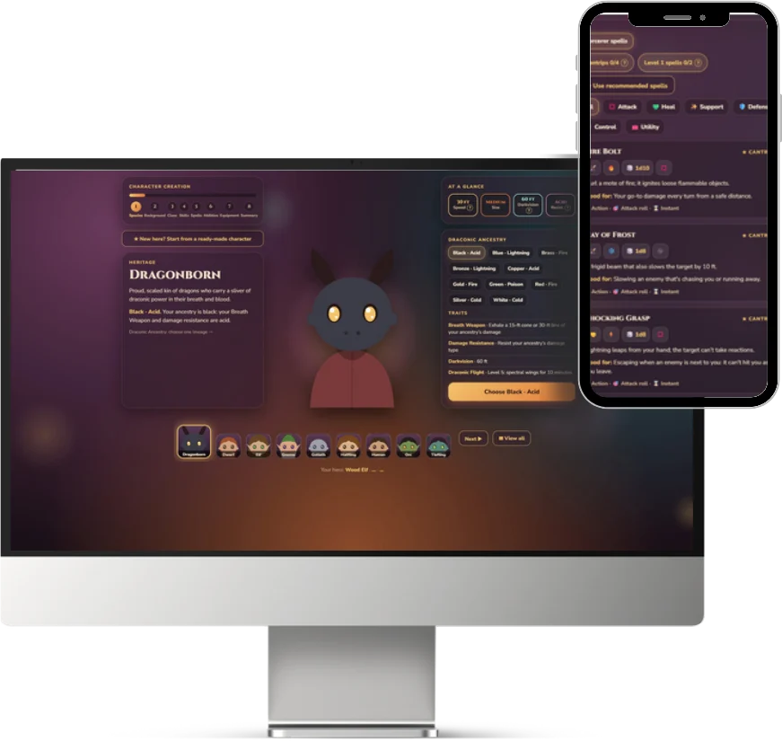

DESIGNER · RESEARCHER · FRONTEND DEVELOPER
AmyCui
Designing and creating creative solutions and products to improve user experience.
View all projects ↗HIGHLIGHTED STORIES
Stories I’ve told
A selection of case studies and interactive experiences that showcase my work as a designer, researcher, and frontend developer.

Origin
An interactive web experience that allows users to easily create their own Dungeons & Dragons character, with a focus on accessibility and usability.
View Story ↗HabitU
A conceptual mobile app that helps users build healthy habits through research-backed habit formation techniques and a personalized experience.
View Story ↗


Graphic Design
Invitations and posters made for the community events I host, from potlucks and picnics to tea parties, each one setting the mood before guests arrive.
View Story ↗


ABOUT ME
A creator, artist and developer with
an eye for possibility.
I’m Amy, a designer and developer with a background in full-stack development, UX research, and event logistics. I bring systems thinking, visual curiosity, and a creative lens to my work